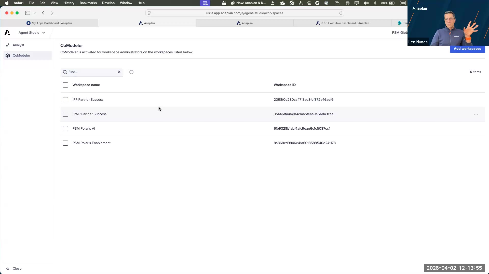
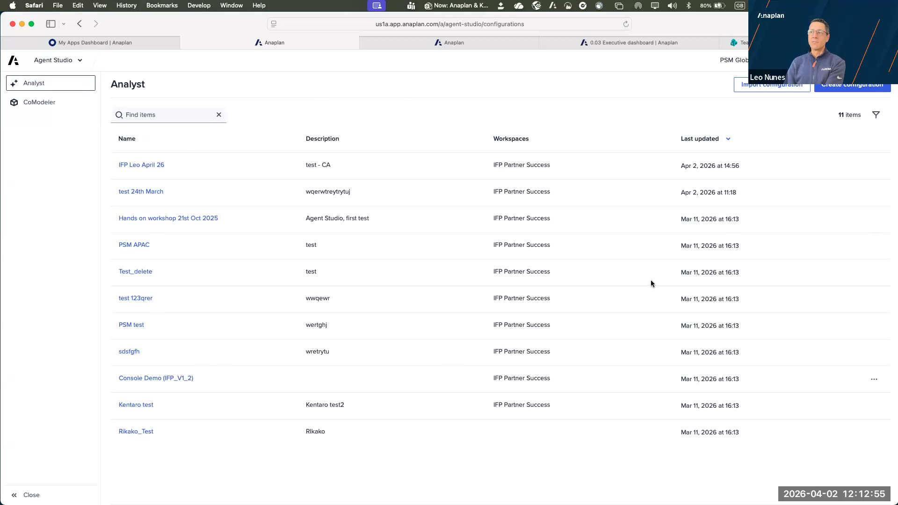
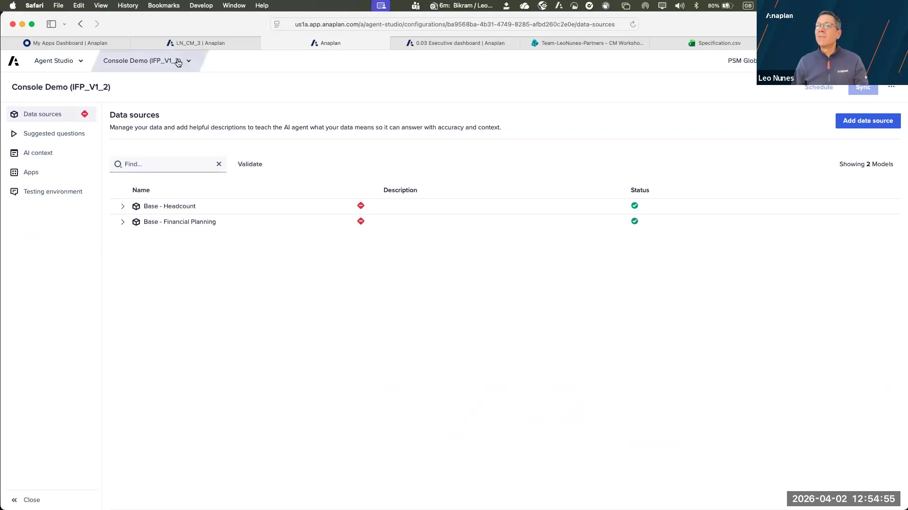
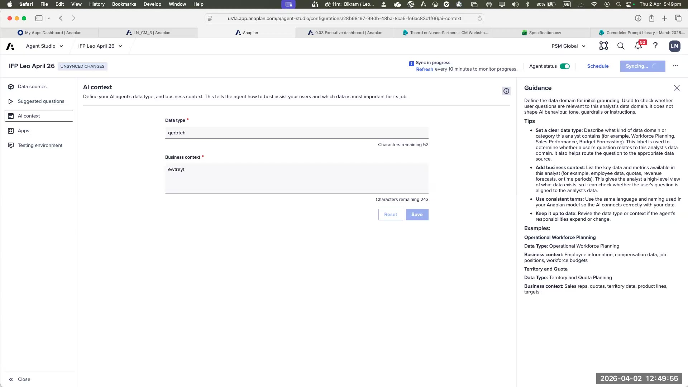

Agent Studio + Custom Analyst
Admin architecture, security model, configuration walkthrough + Labs 3A, 3B
What Agent Studio Is
Agent Studio is the administration layer for all Anaplan AI products. It is not an AI tool itself — it is the control plane that governs which users can access AI, which workspaces have CoModeler enabled, and how Custom Analysts are configured.
It replaced CoPlanet after that product was sunsetted. The vision: a single admin destination for every Anaplan AI capability, current and future.

Agent Studio — the admin layer for all Anaplan AI products (session slide 15)
Architecture: Role Chain
| Layer | Who | What They Control |
|---|---|---|
| Tenant Admin | Customer IT / Anaplan admin | Assigns the AI Admin role to specific users. One-time setup per tenant. |
| AI Admin | Partner or customer power user | Enables CoModeler per workspace. Creates and configures Custom Analysts. |
| End User | Business user / planner | Queries Custom Analysts. Uses CoModeler if assigned to an enabled workspace. |
As a partner, you can be assigned the AI Admin role on a customer's tenant — as long as the customer has licensed AI. This is different from Integration Admin (which is home-tenant locked). Partners can configure and manage AI on customer tenants directly.
Today you will only see CoModeler inside your Carter (partner) tenant, not on customer tenants. This is by design — Anaplan wants customers to purchase CoModeler. Once the customer has licensed it, you can use it in their tenant.
CoModeler Configuration in Agent Studio
From Agent Studio → CoModeler tab, an AI Admin can:
- Enable or disable CoModeler for specific workspaces (workspace-level granularity)
- Add new workspaces to the enabled list
- All workspace administrators in enabled workspaces automatically get CoModeler access
Custom Analyst — What It Is
Custom Analyst is the Anaplan Analyst that you configure for your custom modules. Same underlying technology as the pre-built Finance Analysts — the difference is that you define the data scope, questions, context, and vocabulary.
Leo's framing from the session: Custom Analyst is the evolution of CoPlanner. It's an end-user tool — not a model builder tool — to get real-time insights from Anaplan data using natural language. The power is in what you ask: "What is the forecast revenue for November 2026?" and it returns the exact number, with a source link.

Custom Analyst with Agent Studio: three product pillars — Embedded (native to Anaplan, enforces RBAC), Trusted (secure platform, defined data scope, transparent logic), Purpose-Built (designed for custom planning models) (slide 40)
How Custom Analyst Works — Step by Step
Security Model — The Customer Question
This comes up in every pre-sales conversation. The answers:
- Queries run as the end user — not as the AI Admin or a service account
- Row-level security is enforced — if a user can't see a number in Anaplan, the analyst cannot tell them that number
- Scope is pre-configured — the analyst only looks at modules and line items you explicitly add. Nothing else is accessible.
- No hallucination path — if Anaplan doesn't have the answer, the analyst returns "I can't answer that" rather than generating a plausible-sounding wrong number
- Data is not used for AI training — query data sent to the LLM is not retained or used to train future models
Configuring a Custom Analyst — Overview
From Agent Studio → Analysts → Create New Custom Analyst. The configuration has four sections:
- Name & AI Context — Give the analyst a name. Write a description of the business context: what function this is for, what model it covers, what vocabulary the business uses. The more precise, the better the answers.
- Data Sources — Add modules and select specific line items. Each line item gets a semantic description. Good semantics = good answers. Bad or vague descriptions = confusing outputs.
- Suggested Questions — Pre-configure 5–10 questions the business actually uses. Write them in business language ("What is the forecast revenue for North America in Q3 2026?"), not model builder language ("What is the value in REV-01 line 4?").
- Testing Environment — Test all suggested questions before deploying. The testing tab shows what query was generated and which data was returned — essential for debugging poor answers.
From Lab 2C, you exported a line item dictionary. Paste that into ChatGPT or Claude and ask: "Enrich these line item descriptions for use as semantic definitions in a conversational AI system. Make each description clear to a non-technical business user." Then paste the enriched descriptions into your Custom Analyst data source configuration. This is the workflow Leo demonstrated — it saves hours of manual description writing.
Current Limitations
- Context window: ~5 follow-up questions per conversation before context degrades
- No cross-analyst queries — analysts cannot call each other
- No external API access — cannot be integrated into third-party tools yet
- Visualizations are auto-generated (time series → line chart, ranking → bar chart) — not configurable
- No conversation history saved — each session starts fresh
- LLM transition from OpenAI to Claude targeted H2 2026 — existing configurations should not require rebuild
🖥️ Show — Agent Studio Live Walkthrough
Walk through every screen participants will encounter in the labs. They should recognize each screen when they reach it in their own session.
Show 1: Agent Studio — CoModeler Tab (Workspace Enablement)
After navigating to Agent Studio (top-right dropdown → Agent Studio), the first thing an AI Admin sees is the Analyst tab. The CoModeler tab shows which workspaces have CoModeler activated. Only workspace admins in enabled workspaces can use CoModeler.

Agent Studio → CoModeler tab. The message reads: "CoModeler is activated for workspace administrators on the workspaces listed below." Each workspace shows its Workspace ID. The "Add workspaces" button top-right is how a new workspace is enabled. This is what participants will see in Lab 3A Step 4.
Show 2: Agent Studio — Analysts Tab (Analyst List)
The Analysts tab lists all Custom Analyst configurations in the tenant — both pre-built Anaplan analysts (Finance, Workforce, etc.) and any custom configurations created by the AI Admin. From here, participants can open, edit, or create analysts.

Agent Studio → Analyst tab. Table columns: Name, Description, Workspaces, Last updated. Top-right buttons: Import configuration, Create configuration. This is the starting point for both Lab 3A (explore existing) and Lab 3B (create new).
Show 3: Custom Analyst Configuration — Data Sources Panel
Inside a Custom Analyst configuration, the Data Sources panel is where you define what data the analyst can access. Each model is added as a data source, and within it you select specific modules and line items. The red diamond icon indicates items that need semantic descriptions added.

Custom Analyst configuration → Data sources panel. Left nav shows the five configuration sections: Data sources (selected), Suggested questions, AI context, Apps, Testing environment. The main area lists added models with their validation status. The description at top reads: "Add helpful descriptions to teach the AI agent what your data means so it can answer with accuracy and context." — this is the core of good analyst configuration.
Show 4: Custom Analyst Configuration — AI Context Panel
The AI Context panel is where you give the analyst its business identity. Two fields: Data Type (what kind of planning this is — e.g. "Revenue planning, FP&A") and Business Context (2–4 sentences describing the business, the model, and what questions the analyst is expected to answer). The Guidance panel on the right provides examples.

Custom Analyst configuration → AI context panel. Left: Data type and Business context input fields. Right: Guidance panel with tips — set a meaningful data type, describe the model's purpose, use consistent vocabulary, and keep it updated as the model evolves. The "UNSYNCED CHANGES" indicator appears until you save and sync. This panel is Step 3 of Lab 3B.
Lab 3A — Navigate Agent Studio and Verify Access
Objective: Confirm Agent Studio access, review CoModeler workspace configuration, and explore the Analysts list — building familiarity with the admin interface before creating anything.
Before You Start
- You need an account with the AI Admin role on your Anaplan tenant.
- If you cannot see Agent Studio, your tenant admin has not assigned you the AI Admin role. Contact your workspace admin before proceeding.
Steps
- Log in to Anaplan.
- Click your profile icon (top-right corner) → select Agent Studio from the dropdown. Agent Studio opens in a new tab.
- If you don't see Agent Studio in the dropdown: your tenant admin needs to assign the AI Admin role to your account. This is a one-time setup — note this for the debrief.
- Click the CoModeler tab in the left sidebar. You will see the list of workspaces with CoModeler enabled. Confirm your workspace appears here.
- If your workspace is not listed, click Add workspaces (top right) and add it. All workspace admins in that workspace will then have CoModeler access.
- Click the Analyst tab in the left sidebar. Review the list of existing analyst configurations.
- Click on any existing analyst (a pre-built Anaplan analyst if available). Note the configuration structure — how many data sources? How detailed is the AI Context description?
- Navigate through the tabs: Data sources → Suggested questions → AI context → Testing environment. Get familiar with the layout before Lab 3B.
Step 4: The CoModeler tab showing which workspaces have CoModeler enabled. If your workspace is missing, use "Add workspaces" to enable it.
Step 6: The Analysts tab. Each row is an analyst configuration. "Create configuration" (top right) is where Lab 3B begins. Explore an existing configuration before creating your own.
Debrief Questions
- Which workspaces are currently enabled for CoModeler in your tenant?
- How many analyst configurations exist? Are any pre-built by Anaplan?
- In a pre-built analyst, how detailed is the AI Context description? What business context does it include?
- How many data sources (models) does a pre-built analyst reference?
Lab 3B — Configure a Custom Analyst
Objective: Create a working Custom Analyst configuration targeting NovaTrend's revenue module — and test it with real questions.
Before You Start
- You should have the line item dictionary exported in Lab 2A or 2C. If not, run the documentation export from Lab 2C before proceeding.
- You need the module you built in Lab 2B available in your Anaplan model — or use any revenue/FP&A module you have access to.
Steps
- In Agent Studio → Analysts tab → click Create configuration.
- Enter the name: NovaTrend Revenue Analyst.
- Click the AI context tab on the left. Fill in:
- Data type: Revenue planning and FP&A
- Business context: Write 2–3 sentences describing NovaTrend (use the case study from page 2). Include: industry (consumer goods), planning scope (regional revenue and product-level forecast/actuals), and key metrics this analyst should understand.
- Click Save after filling in AI context.
- Click the Data sources tab. Click Add data source.
- Select the model containing the module you built in Lab 2B (or any revenue module available to you).
- Inside the model, select the revenue module. Within that module, select 3–5 line items (e.g. Revenue, Units Sold, Gross Margin).
- For each line item, write a semantic description in plain business language. Use the exported line item dictionary from Lab 2C as your source — or write from scratch. Example: "Revenue: Total gross revenue in USD for the selected region and product, before any discounts or returns. This is the primary top-line metric for NovaTrend planning."
- Click the Suggested questions tab. Add 3 questions a NovaTrend planner would actually ask. Write them in the planner's language, not model builder language. Examples:
- "What is the forecast revenue for North America in Q3 2026?"
- "Which product had the highest gross margin last quarter?"
- "How does actual revenue compare to plan for EMEA in Q1 2026?"
- Click Save and then Sync the configuration (button in the top area — the status indicator changes from "Unsynced" to "Synced").
- Click the Testing environment tab. Test each of your 3 suggested questions. For each:
- Does it return an answer with a data value?
- Does it provide a source link?
- If it fails, return to the Data sources tab and improve the semantic description for the relevant line item, then re-sync and retest.
Step 3: AI context panel. Data type goes in the top field; Business context in the larger text area. The Guidance panel on the right provides tips. The more specific you are about the model's purpose and vocabulary, the more accurate the analyst's answers will be.
Steps 5–8: Data sources panel. Each added model shows here. Red diamond icons indicate line items that need semantic descriptions. Click into a module to add or edit descriptions for each line item. Do not leave descriptions blank — blank descriptions produce poor or failed answers.
If a test question fails or returns a wrong number, the most common cause is a vague or missing semantic description. Open the data source, find the relevant line item, and rewrite the description with more business context. Re-sync and retest. This iteration cycle is normal — it typically takes 2–3 rounds to get consistently good answers.
Debrief Questions
- Did all 3 test questions return correct answers? If not, which ones failed and why?
- Did the analyst provide a source link showing where the data came from?
- What semantic description change had the most impact on answer quality?
- If you asked a question outside your configured scope (e.g. about headcount, which you didn't configure), what did the analyst say?